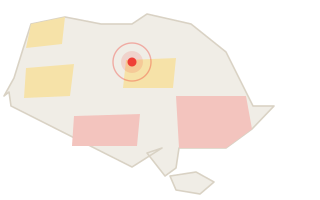

РАДАР.LIVE — моніторинг повітряних загроз України онлайн
БпЛА
Крилата ракета
Балістика
КАБ
Авіація
Інші загрози
Очікування даних…
Поточні загрози 0
Очікування даних…
Статус джерел
Очікування даних…
Очікування даних…
Очікування даних…
Сучасний сервіс моніторингу повітряних загроз України. РАДАР.LIVE збирає та відображає інформацію про повітряні загрози з відкритих джерел: NEPTUN і MAPA. Сервіс допомагає швидко оцінити ситуацію у вашому регіоні — без вигаданих координат і вигаданих траєкторій.
Як це працює
Підтверджена інформація з відкритих джерел.
Незалежна перевірка даних NEPTUN і MAPA.
Візуалізація загроз у реальному часі.
Звукові та візуальні повідомлення.
Ударні безпілотники, які можуть використовуватися для атак.
Ракети великої дальності повітряного, морського або наземного базування.
Високошвидкісні ракети з коротким часом підльоту.
Керовані авіаційні бомби, що застосовуються з літаків.
Бойова авіація, яка може нести ракети, КАБ та інші засоби ураження.
Інші повідомлення про повітряну небезпеку, які не уточнено за типом.
З відкритих моніторингових джерел NEPTUN і MAPA.
Маркери з'являються лише для повідомлень із достатньо точними координатами. Повідомлення про області без координат показані лише у стрічці.
Активна — джерело ще відстежує загрозу. Завершена — джерело більше не відстежує її. Нове — зафіксовано за останні 10 хвилин.
Ні. орієнтуйтеся на офіційні сигнали повітряної тривоги.
Докладніше: Про проєкт · Як працює · Джерела · FAQ · Конфіденційність · Умови · Контакти